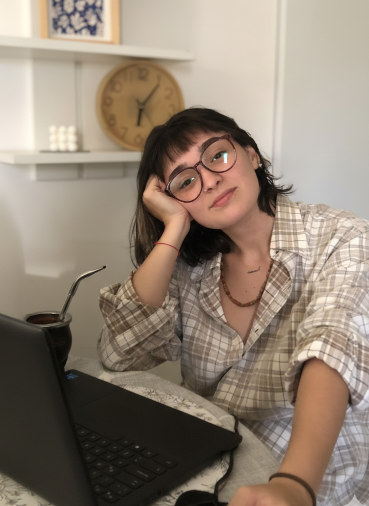
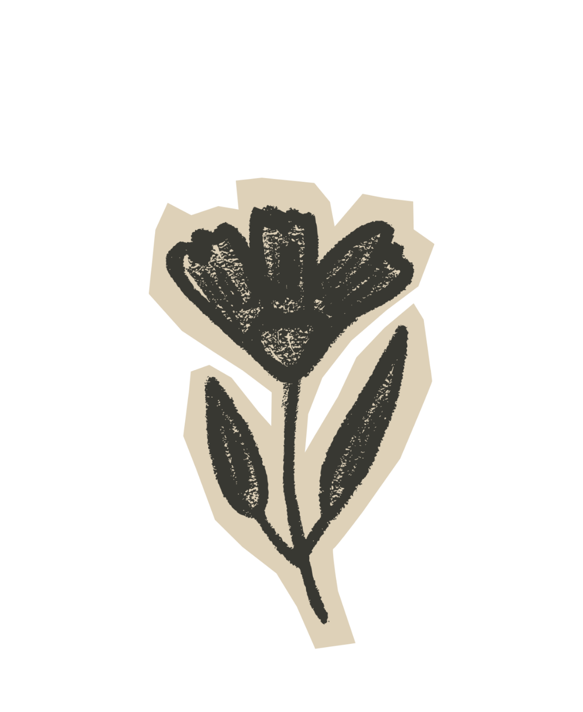
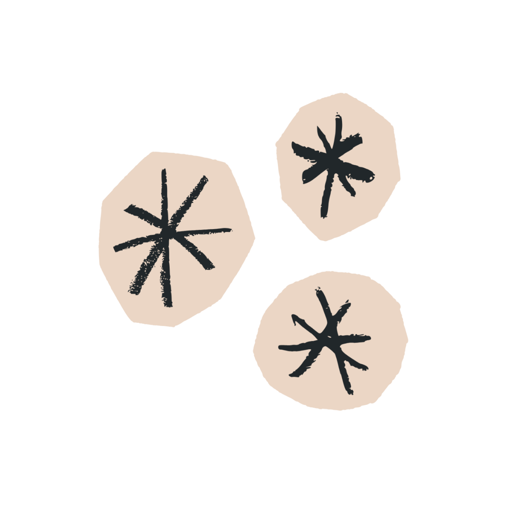

Hola! Soy Barby, creativa especializada en dar vida y traducir ideas abstractas en piezas tangibles de alto impacto. 
Me muevo cómodamente entre la cámara, la edición y el diseño, lo que me permite agilizar procesos y asegurar que la visión creativa no se pierda en el camino.
Mi background multimedial me permite ver el panorama completo: entiendo cómo una foto de producto debe convivir con un reel dinámico y cómo ambos deben integrarse en una web funcional.
Soy curiosa por naturaleza (¡incluso programé este portfolio!) y creo firmemente que la creatividad sin estrategia es solo decoración. Yo estoy acá para crear ambas.
Experiencia
-
/ 2024 - Presente
Community Manager (NL, Dos Almas, Costumbres Argentinas) -
/ 2023
Editora de video & Diseñadora Gráfica (@cocoenmano - Moda Circular & Vintage) -
/ 2023 - Presente
Diseñadora Freelance (Gráfica y Digital) -
/ 2022
Project Management
Educación
-
/ 2024 - Presente
Lic. Artes Multimediales (UNA)
Skills
- / Edición: DaVinci Resolve, Adobe Premiere Pro, Adobe After Effects, CapCut, Reaper (SFX|Audio Sync).
- / Diseño: Photoshop, Illustrator, Canva.
- / Marketing: TikTok Ads, Meta Business Suite.
- / Gestión: Trello, Notion.
- / Idiomas: Español (Nativo), Inglés (Intermedio).